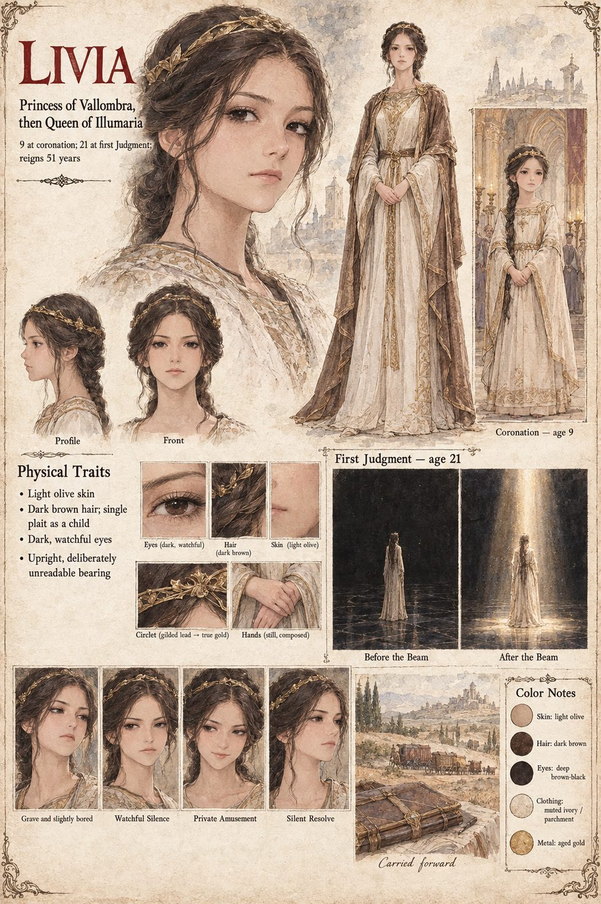

Livia
Princess of Vallombra, then Queen of Illumaria · 9 at her coronation, 21 at the first Judgment · reigns 51 years
The daughter of Faustin, nine years old when he dies, crowned in the seventh month on the Round in a circlet of gilded lead washed in vinegar and wine, and held very still for eleven minutes. When the true-gold circlet has been cast and passed through the fire, she asks Piero in the corridor outside the treasury whether it is the same crown. It is the same crown, Majesty, he says. Then it has got heavier, says Livia, and goes in to her supper.
At twenty-one she stands alone on the black floor of the Basilica while the beam falls through the Arc onto her head, and glows, and looks faintly amused; the chroniclers record serenity. That night she asks Piero for her father's private ledger, the one with the debt in it, reads it standing to the last line, and says only that he always did carry a debt oddly. She keeps it, and for fifty-one years sends forty wagons of grain to the Saltway Quarter on the anniversary of the First Furrow, without a label. The last line she writes in the ledger is the two words the rule allows for a debt that will not close: Carried forward.
“Then it has got heavier.”
Appears In

Related Subjects


Related Records

Livia, nine years old, in a circlet of gilded lead washed in vinegar and wine, holds very still on the Round for eleven minutes.

The first Judgment: every torch doused, Livia alone on the black floor, the beam falling through the Arc onto her circlet. The gold flares, the room weeps, and the queen looks faintly amused.